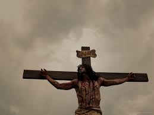

Aspectos Centrais da Sexta-feira Santa:
Significado: Recorda o sacrifício e a Paixão de Cristo.
Tradições: Jejum, abstinência de carne e oração.
Encenações: Realização da Via Sacra (paixão de Jesus).
Celebração Litúrgica: Ocorre a "Celebração da Paixão do Senhor", único dia sem Missa no ano católico.
Data: Sexta-feira anterior ao Domingo de Páscoa.
Celebrações e Ritos:
Ação Litúrgica: Foca na leitura da Paixão (geralmente São João), adoração da Santa Cruz e comunhão eucarística,
consagrada na Quinta-feira Santa.
Devoção: Muitos fiéis participam de procissões, encenações da Via Sacra e momentos de meditação.